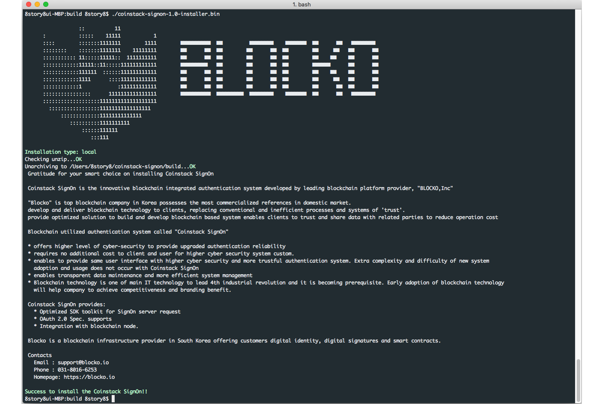
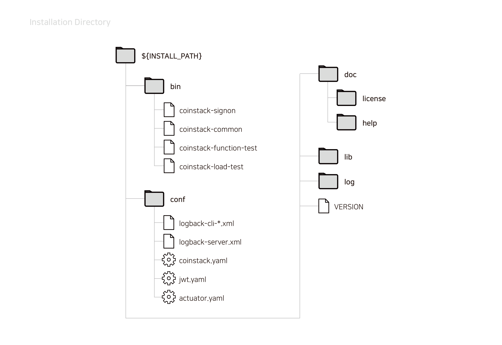

설치 확인
정상적으로 설치됐다면 다음과 같은 메시지와 함께, coinstack-signon-${VERSION}의 형태의 디렉터리가 생성된것을 확인할 수 있습니다.

설치 디렉터리
설치 디렉터리 목록은 다음과 같습니다.

coinstack.yaml 파일은 설치 후에는 존재하지 않으나, 서버 설정에서 생성합니다.
설정 방법은 서버 환경 설정을 참조하시기 바랍니다.
| 파일명 | 용도 |
|---|---|
| bin | 실행 명령들이 있는 디렉터리 |
| ┗ coinstack-signon | 노드 및 사용자 관리 |
| ┗ coinstack-function-test | 기능 테스트 |
| ┗ coinstack-load-test | 부하 테스트 |
| conf | 설정 파일들이 있는 디렉터리 |
| ┗ coinstack.yaml | 노드의 어드레스, 관리자의 어드레스, 서버의 개인키 등이 설정된 파일 |
| ┗ [ jwt.yaml ] | 사용자가 정의가능한 포맷 |
| ┗ actuator.yaml | Spring boot actuator 관련 설정 |
| doc | 관련 문서를 모아놓은 디렉터리 |
| lib | 실행을 위한 라이브러리를 위한 디렉터리 |
| log | 실행 로그가 쌓이는 디렉터리 |
YAML
데이터 직렬화 양식으로 주로 XML과 같이 설정 파일 역할을 담당하는 언어로,
Coinstack SignOn 서버를 구동하기 위해 필요한 설정들을 담고 있습니다.
이 언어에 대한 자세한 사항은 http://yaml.org/을 참조하시기 바랍니다.
작성 방법
다음과 같이 들여쓰기에 유의하며 작성합니다.
coinstack:
endpoint: http://localhost:3000
signon:
admin:
address: 1KkM2NLZEK9SL4sChJVgg45k3godj7Tnix
server:
port: 8080
privatekeys: |
L46DA9eQzqEaQGe8bQh3YTpwCaokLsiTEmXvaqbUkfGwY47so24J